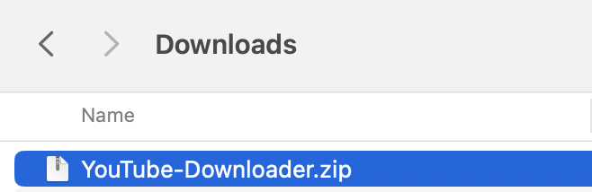
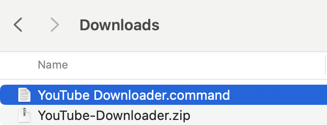

Do this once. After that, opening it is a single double-click.
1
Unzip it
Unzip the file you downloaded.

YouTube Downloader.command is the file that opens the app every time, so put it somewhere you'll remember.

2
Double-click it
Double-click YouTube Downloader.command. The first time, macOS blocks unsigned tools, so it won't open yet — that's expected. The next step unlocks it.
3
Allow it · once
On the “Apple could not verify…” message, click Done.
Open System Settings ( menu → System Settings, or press ⌘ Space and type “Privacy”).
Go to Privacy & Security and scroll down to Security.
Click Open Anyway (circled below), then enter your Mac password.
This is the screen you're heading to — click the glowing button.
As it starts up the first time, you may see one or two more prompts — just allow each:
“Terminal would like to access files in your Downloads folder” → click Allow.
“The python3 command requires the command line developer tools…” → click Install, then Agree to the license. It keeps going on its own once that finishes — no need to reopen anything.
4
You're set
It downloads and sets up (about a minute the first time), then your browser opens with the downloader. Paste links and go. Keep the black window open while you work; close it to stop. After this first time, you never touch Settings again.
✓
Double-click YouTube Downloader.command
It opens in your browser, ready to use.
Keep the black window open while you work; close it to stop.